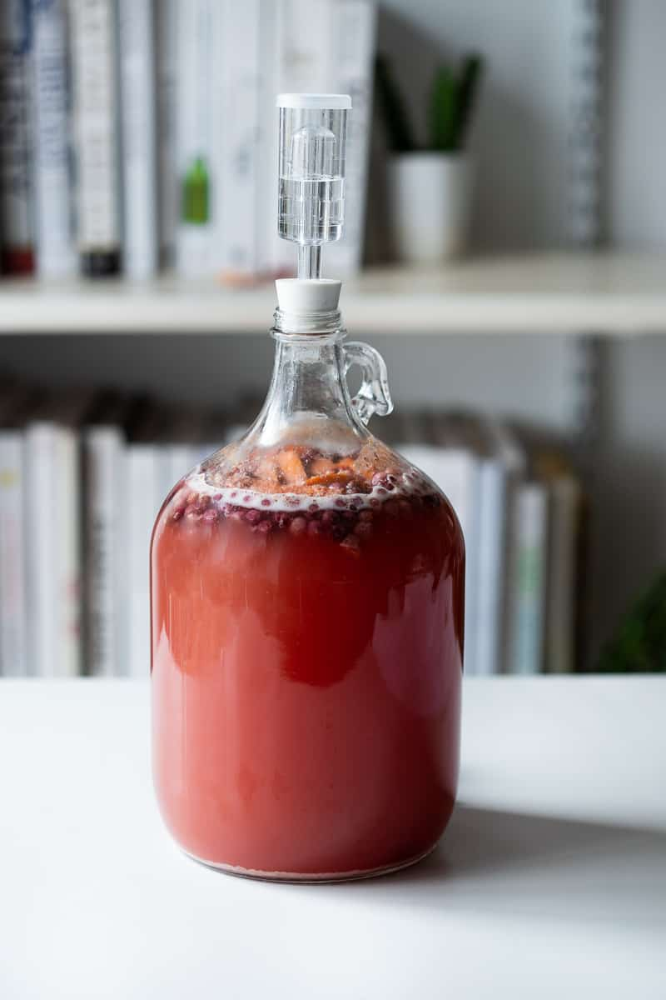

Mead

Description
This is a simple mead recipe that is very easy to put together. Learn how to make mead using this beginner's recipe!
Ingredients
- water non-chlorinated or filtered
- 925 g honey depending on how sweet you want to end product to be.
- berries or fruit of any kind fresh or frozen, about a cup
- 1 orange
- 10 raisins
- 1/2 package champagne yeast or other wine yeast
Steps
- Bring a large pot of lightly salted water to a boil. Add pasta and cook for 8 to 10 minutes or until al dente; drain.
- Heat about 1/2 gallon of non chlorinated water in the pot on medium heat. Once it's warm, but not boiling, add the honey and stir it so it all dissolves. Turn off the heat.
- Put the berries or other fruit, orange slices (skin and all), and raisins into the one gallon jug.
- Use the funnel and carefully pour the honey water mixture into the jug.
- Top off the jug with cold (preferably filtered) water, leaving at least 2 inches of head space on top. Put the lid on the jug and gently mix everything around a bit.
- Make sure that the temperature of the must is below 90°F, then add 1/2 packet of champagne yeast. Put the lid back on tightly and this time shake the jug for a minute or two to distribute the yeast.
- Put a little water in the airlock to the line, then put the rubber stopper end into the jug. Put the jug in a dark place. It should start bubbling within 12-24 hours.
- After about 4-6 weeks of fermenting, once all bubbles have stopped rising in the jug and airlock, the mead can be bottled and aged.